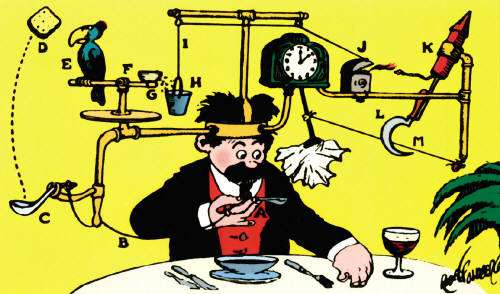

Cloud e Micro-serviços
Em 2008 participei de uma palestra da IBM relacionada a Cloud Computing, este é um assunto recorrente, conforme já abordei em outros artigos existem diversos servidores de hospedagem cloud, inclusive no Brasil.
O Cloud Computing promoveu fortemente os micro-serviços, não é de hoje que algumas empresas já publicam suas aplicações utilizando a estrutura AWS Lambda, Azure Functions / Fabric, Webtask e outros serviços.
Por este motivo faz todo sentido abraçar os micro-serviços e focar seus estudos nesta plataforma, nós sabemos que grande parte do mercado brasileiro é um pouco atrasado em questões tecnológicas, mas podemos afirmar que micro-serviços é um assunto vivo nas empresas, é difícil falar de micro-serviços e não lembrar do Docker. Os containers mudaram e estão mudando nossa forma de pensar em relação a publicação, provisão e escalabilidade de serviços, de forma que não há necessidade de um conhecimento profundo para instalação de uma plataforma, podemos encontrar um JBoss container style, Kong Gateway API, Apache entre outras aplicações. Por isso não seja resistente a cultura DevOps chegou!
Seguindo esta linha de pensamentos, voltamos a focar no nosso código. Então não perca tempo, estude os tópicos que estão quentes no mercado. Esta cultura promove menos SysAdmin e mais DevOps, pronto falei rs!
BigData e Machine Learning
Big Data como o próprio nome diz descreve um imenso volume de dados – estruturados e não estruturados. O importante não é a quantidade de dados e o que fazer com os dados. Os dados podem promover insights que impactam em decisões e direções estratégicas.
Machine Learning anda lado a lado com Big Data seus algoritmos aprendem interativamente a partir dos dados. Através de suas análises é possível encontrar informações ocultas.
Ops! Facebook sabe muita coisa sobre nós! Muito antes da era rede social, a Target aplicou um estudo, baseado somente nas compras de seus clientes e descobriu comportamentos e como identificar consumidoras grávidas, chega de spolier, veja no livro "O poder do hábito".
Inglês
Este é um tópico recorrente, todos sabemos que muitas empresas exigem Inglês fluente. O inglês técnico não precisamos abordar que é pré-requisito para o nosso dia a dia, infelizmente há pouco conteúdo técnico nacional, livros e cursos.
Em uma entrevista não adianta abordar seus 5, 10 ou 15 anos de conhecimento em Java, C++, React, Angular, GraphQL, MongoDB, entre outros, se não tiver fluência você provavelmente será descartado. Isso mesmo o mundo é cruel!
Por este motivo mantenha o foco seus estudos no Inglês, você provavelmente passará por entrevistas em inglês, eu mesmo estou focado neste tópico, hoje em dia podemos ter aulas particulares on-line, aplicativos moveis para estudo de línguas e podcast , entretanto estamos em uma era onde perder o foco é muito fácil devido a variedade de conteúdo.
Testes técnicos
Antigamente somente algumas empresas solicitavam testes técnicos, eu acho uma das partes mais importante do processo, pois neste momento você mostra seu trabalho.
"Talk is cheap, show me the code" by Linus Torvalds.
Este é momento de aplicar tudo que você conhece. Errado, nem tudo que você conhece é útil para empresa. Mantenha o foco no Clean Code e SOLID, dependendo do teste e o nível de exigência, o Code Review identificará facilmente gaps no código, code smell, erros de lógica, falta de documentação, duplicidade entre outros pontos. Se rodar um Sonar bem configurado teremos uma breve percepção do trabalho entregue pelo candidato.
Parece que algumas empresas estão deixando de lado aquela prática bizarra, programar num papel! Sinceramente isso me passa a impressão, que algum dia terei de entregar meu código em papel.
Enfim, "Não deixe que a sua solução seja mais complexa que o problema", portanto não seja uma Rube Goldberg Machine.

Entrevista técnica
Este é o momento de se preparar e ter uma abordagem segura, sobre o seu trabalho. Dependendo do nível da entrevista, veja algumas perguntas e vamos pensar um pouco:
- Em qual cenário devo utilizar NoSQL ou DBMS?
- O que posso fazer para promover escalabilidade em uma API?
- Quais soluções de cache você recomenda?
- Aplicativos híbridos ou nativos?
- Você poderia explicar os patterns que você mais utiliza?
- Conhece programação reativa?
- Como você aplica testes (TDD, BDD) em seus projetos?
- Você conhece já trabalhou em um ambiente com a cultura Agile?
Existem outras perguntas técnicas que poderiam ser empregadas neste tipo de entrevista de acordo com o cargo.
Mundo front-end
Nos últimos tempos podemos observar que o número de frameworks front-end superou o número de Pandas no mundo.
Há algum tempo surgiram diversos frameworks para resolver um problema recorrente no front, as views. Não era nada saudável criar sua view usando puramente o DOM, até mesmo com jQuery Template não era um código de se orgulhar.
Em 2010 surgiu a biblioteca Backbone.js que resolvia bem este problema MVC naquela época. No mesmo ano surgiu o Angular.js, em 2013 surgiu o React, já em 2014 o Vue.js. Vamos parar por aqui, pois foram lançados diversos frameworks e bibliotecas para resolver um problema em comum. Cada um com sua característica, por exemplo o Angular leva o seu javascript para o HTML e React traz o HTML para o seu javascript, são abordagens diferentes. Vale ressaltar que é bom saber o conceito de cada um e não ser um "fãboy", pois o mercado utiliza tudo.
Outro tópico importante é o Typescript, criado pela Microsoft e abraçado pelo Google, o Angular utiliza o Typescript e consequente Ionic também, sendo assim não esqueça do Typescript, mencionei três vezes para mostrar a relevância.
- jQuery morreu?
Não vejo desta forma que, o jQuery é um framework bem completo e existe muita codificação compatível com qualquer navegador, o próprio Angular usa em seu core uma versão do jQuery o jqlite para query em elementos angular.element.
Veja: https://docs.angularjs.org/api/ng/function/angular.element
Mundo back-end
Já estamos vivenciando um momento, onde ser um back-end developer e saber apenas uma linguagem, ou ser "fãboy", reduz quase todas as possibilidades em uma entrevista.
Por muito tempo ouvimos falar sobre Java e C# no ambiente corporativo, Ruby em startups e o Python no Google, este era o resumo da opera.
Pois bem segue uma pesquisa da Forbes em 2017, com as 5 linguagens mais utilizadas:
- Python
- Java
- JavaScript
- C#
- PHP
Eu recomendaria ter imediatamente um alto conhecimento em duas linguagens e adquirir a longo prazo o conhecimento nas outras.
Além destas linguagens existem outras que não estão na lista, como GoLang, Rust, C, C++, Lua, Kotlin, Haskell, Elm e ErLang, pois bem será necessário um estudo de mercado x linguagem, já que temos vários sabores na programação e muitos são utilizados.
Fullstack
Algumas empresas contratam desenvolvedores com proficiência para trabalhar no front-end e back-end. Resumidamente ser um Fullstack é transformar um protótipo em um MVP (minimum viable product). Ser um profissional deste nível aumenta o leque de opções, é praticamente carregar o piano e tocar.
Recomendo se aprofundar, visto que algumas empresas não tem uma separação explícita de atribuições/cargos. Uma linguagem que pode facilitar desenvolver em ambas as pontas é próprio Javascript que roda também no back-end graças ao Node.js.
Enfim
Estas dicas não são um Bulletproof, mas creio que podem abrir a cabeça e nos ajudar a ficar preparado para conceitos que podem ser aplicados ou substituídos a qualquer momento.